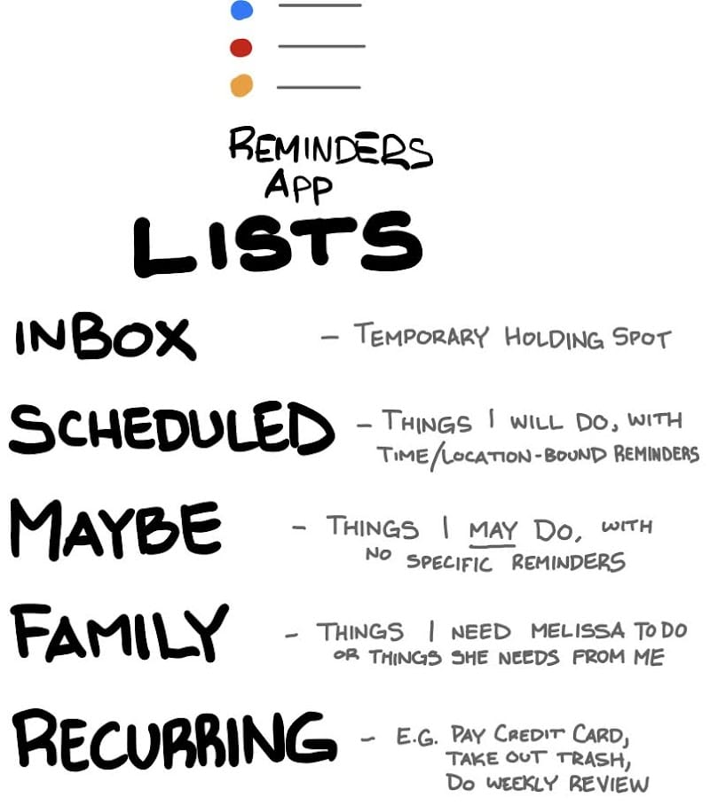
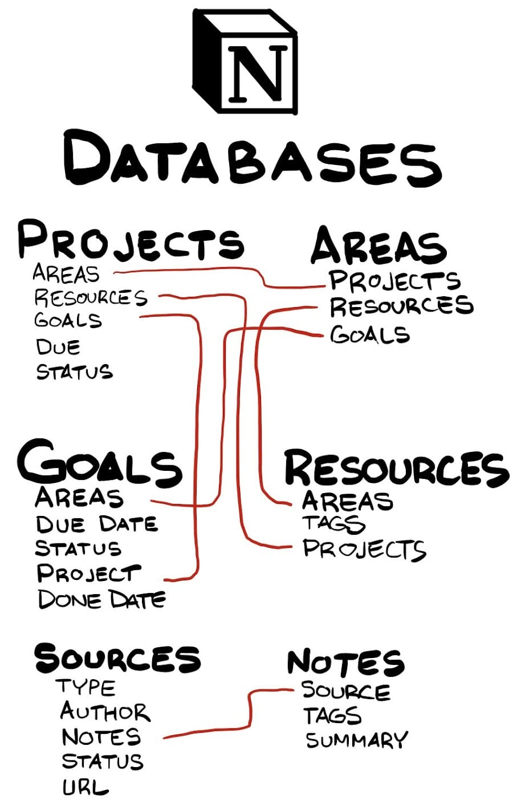
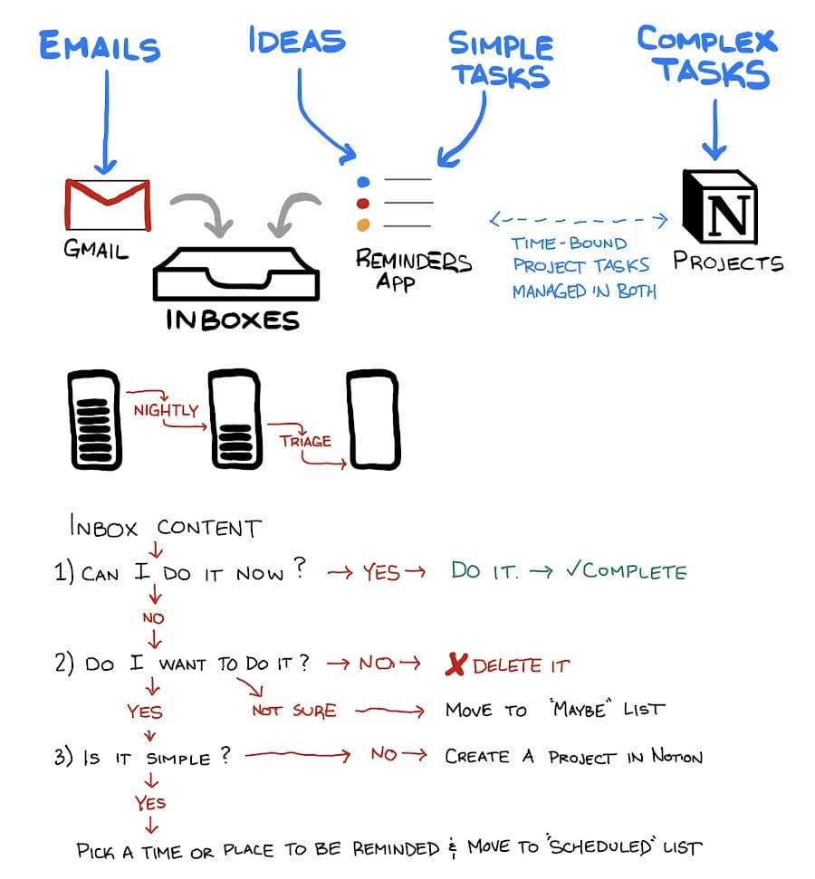
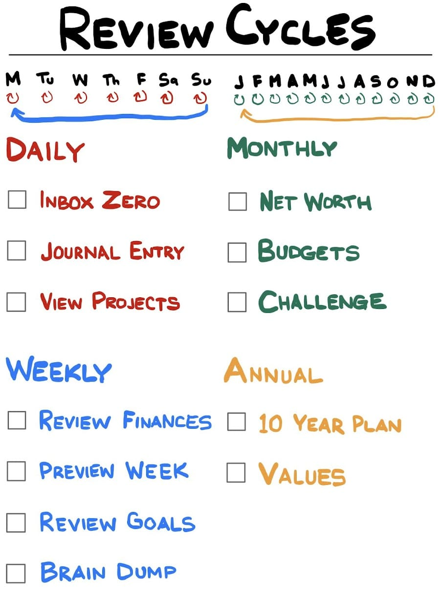

This is a follow-on to Column 370, a Column which turned out to be perfectly mistimed. I end that post making mention of my discovery of “Notion”, which went on to supplant almost everything I had just written about. More than that, though, it’s all gone from “a thing I like in theory” to “a thing I actively do and use”.
Organization Theory
Organization is about minimizing friction between you and the thing you need when you need it. Whether that thing be a physical item, event or task to attend to, or a note/piece of reference material, you don’t want to have to dig and search, or worse - lose it altogether.
When it comes to organizing yourself, you can start with the techniques you like and work your way backwards to how to apply those techniques to your life, or you can start with the things you care about organizing (your scope) and then look for techniques to that might apply to them. I think it’s best to do a mix of the two approaches in an iterative fashion. Organization, like fashion, is never “finished”. This post will assuredly age poorly as I “see the light” again in the future.
How you organize our physical space is dependent on the things you own and the space available to you; as such it isn’t THAT transferable (or interesting) for me to talk about the layout of our kitchen1. If you’re interested in physical organization, here’s a place to start2 This post will focus on how I organize my time and information.
Scope
I’ve spent literally years thinking about/obsessing over the best way to organize things in my life. These are things I am going to cover in this post.
- Events
- Tasks & Projects
- Notes
Tools & Techniques
My toolbox has grown, then shrank over the years. Perfection, they say, is not when there’s nothing left to add, but when there’s nothing left to take away. I believe I have approached that point for managing my needs.
This is what’s in my current toolbox:
- Google Calendar + Gmail
- iOS Reminders
- Notion
More important than the tools, are the techniques:
- Consistent Lists
- Periodic Reviews
- Connected systems
Tools
Events
Nothing revolutionary here. I use Google Calendar3 to manage event-planning. It’s cloud-based therefore always in sync. I have a personal one and a shared one with my wife. It’s used for appointments and contains the logistics for those appointments. I make good use of the “Notifications” feature to ensure something pops up on my phone if I need to be getting out the door or on the phone soon. On the whole, though, my calendar is usually pretty blank.
Tasks and Projects
Background
How I manage tasks and projects is an area of that has seen a lot of turn in the past 18 months. I’ve used for some time Google Tasks, Google Keep, Wunderlist, Todoist, a master Notion “tasks” database, and most recently the built-in iOS Reminders app. My philosophy on “Getting Things Done” changed as I gained real-world first-hand experience with it (as opposed to reading other people’s ideas ). Ultimately all you can do is try a lot of things, keep what works, and throw away what doesn’t. I’ve thrown away a lot of things.
Rise and Fall of Todoist
I used Todoist extensively for about 16 months with great success. Much like Google Calendar, my wife and I each had our own Todoist lists, and we had a shared list as well. That worked honestly quite well. We created tasks to remind ourselves to do things. We would plan out our days using tasks in a shared list. We would sometimes even use tasks as a way to ask each other to “take care of (whatever)”.
Ultimately, though I never found Todoist to be that good for Projects. If your tasks were sufficiently large, they became difficult to manage. I found that most of my Project scope usually contained some information that was useful for completing the project (i.e. project notes). Todoist’s solution for that sort of thing is to use comments, which is clearly a workaround at best. Also Todoist Projects, once complete, sort of just disappear. I could never quickly find reference info from the Projects I completed in the past, which was something I often wanted.
So I found something else for managing projects. Then I took a step back and looked at what I was actually using Todoist for… and I realized that every single one of those things could also be done on the built-in “Reminders” application on iOS. So we’ve been giving that a go for a few months now and it’s been great.
Notion + iOS Reminders
I use Notion to manage my personal projects. I have a “Project List” in Notion which houses pages containing project scope definition, notes, and associated tasks to complete. Some quick examples:
- Just today I created a page to manage my trial on Mint Mobile
- I have a project for the next Podcast Episode I’m about to record
- I have a project page for researching a potential vehicle purchase
- This text is literally being typed on my phone in a Notion page titled “#401 - Revisiting AIM”
With iOS 13, the built-in Reminders app got much more capable. I use iOS reminders to handle different scenarios:
- iOS Reminders is my primary “inbox” for ideas, quotes, & tasks
- I maintain a list containing any task with a due date or some sort of location-binding, (even those in Notion Projects are added in Reminders, too)
- I maintain a list containing vague ideas I may (or may not) do in the future
- My wife and I maintain a shared family list for those things we do to manage the house & family
Notes
A little over a year ago I learned about the concept of a “[Zettelkasten](https://en.wikipedia.org/wiki/Zettelkasten”. For those of you who aren’t completely insane and don’t care to read in great depth about personal knowledge management solutions & notetaking techniques - it’s basically this:
- Create a massive collection of notes in a single place
- Every note should contain at most one basic idea
- Every note should be linked to some other note in the collection
- If you like, you can tag your notes with tags according to their nature
That’s about it.
If the concept seems vaguely familiar, it’s because [I wrote about it 7 months ago](https://aarongilly.com/390. That Column explains what I do and how I do it better than I care to right here. It’s all managed in Notion. For more, click that link - or just go see my notes and their sources!
Since I wrote that post, Notion implemented a “backlink” feature which automatically creates a list of pages in Notion that link to whatever page you’re on. It makes my whole thing both more effective and incredibly easy to manage. Basically it’s all automatic now. Also since writing that post, I went from 270 notes, to rapidly approaching 500. After I finish reading the book I’m reading now I’m sure it will be at 500+.
Techniques
Organization requires some level of consistency. You need something that you can consistently rely on to be the framework around which the rest of any organization/productivity system may be built.
You don’t need fancy tools if you’ve got the right techniques. For example, one of the best organizational/productivity techniques is “inbox zero”. Realistically, it doesn’t matter if your “inbox” is some application, or a physical inbox, or your email, or the result of some combination of automations… it could be literally set of text files on your desktop. It could be sticky notes you stuck to the wall of your office. It doesn’t matter what or where you capture ideas and tasks, so long as it’s a consistent spot and you make time to process them all. That’s what’s valuable.
My tools reflect my techniques. To mix up the pages of text, I’m going to leave the rest of this column to be done visually.
iOS Reminders Lists

Notion Databases
Along with some of their properties.

The Ongoing Process

Review Cycles

One final note worth mentioning: Clearly I do a lot more than just those things. What you’re reading is a tool I use to help me sort out my thoughts. I have a 30 Day Challenge database in Notion. I have a Creation of the Week database. I built an entire home-grown MongoDB-based webapp to use as a quantified self journal. This Column is the core stuff that I think would apply to you, dear reader.
Also: hi Whitney, hi Emily. I didn’t know you read.
Top 5: Tips for Organizing Yourself
5. Use a Calendar
Calendars are free. The most basic thing you can do to organize yourself is have something that marks the passage of time that you can make notes on.
4. Keep a List of Your Goals & Projects
It’s good to have a basic idea of what you want to accomplish, and what things you’re actively working on. In an ideal world, those things should be connected.
3. Have an Inbox
You need a consistent place where you will capture ideas, tasks, or whatever comes across your plate.
2. Do a Weekly Review Every Week
You need to make time to step back from what’s immediately in front of you and look at what you’ve done, what’s left to do, what’s on your radar, and ensure everything is well-aligned.
1. Get to Inbox Zero Every Day
The cornerstone of being on top of things is having a consistent place to capture things coming into your life, and consistently processing all those captured things. My wife and I both are huge proponents of Inbox Zero. We both hit it every single day.
Quotes
Hi Goose! My Older Son, to an Alpaca at the zoo
Footnotes
-
Our house is very organized. This is 95% thanks to my wife, 20% thanks to me, and -25% thanks to our 2 year old. ↩
-
TL;DR - get rid of everything you own and you’ve nothing left to organize! ↩
-
Google Calendar is our default, but that only is because it’s what is connected to our gmail accounts. For as much as I have been moving away from Google lately, dumping gmail just isn’t in the cards. That’s locked in. ↩